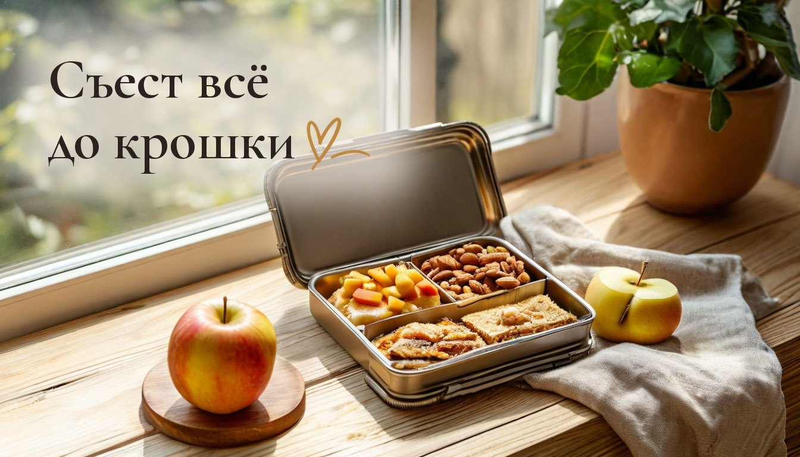
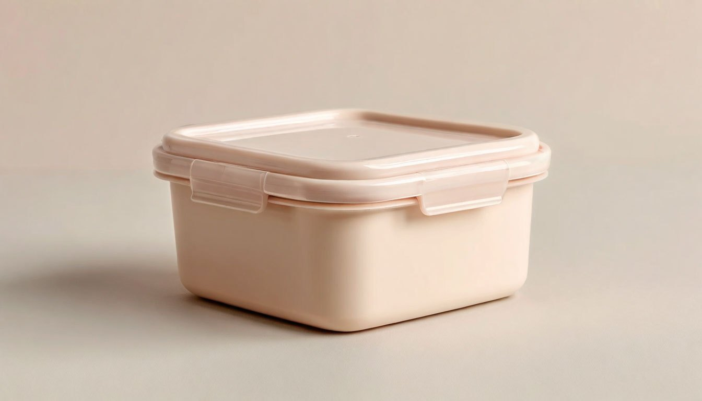
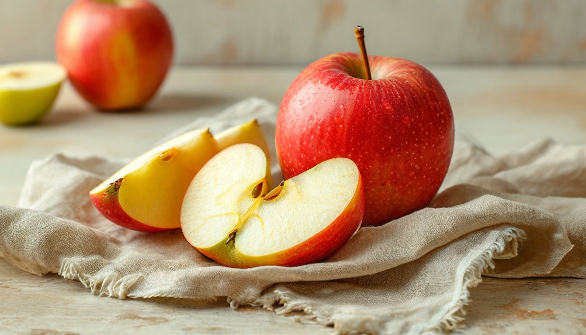

Перекус в школу ребёнку: 5 ошибок, из-за которых он возвращается домой нетронутым

Утром старательно собрала контейнер: бутерброд, яблоко, печенье. А вечером он вернулся из рюкзака почти полным. Многие мамы школьников знают это чувство.
Дело редко в капризах. Перемена в школе длится десять-пятнадцать минут, за это время нужно сходить в туалет, поболтать с друзьями и добежать до следующего кабинета. Перекус, который неудобно или неловко есть, просто остаётся в портфеле.
Моя дочка в четвёртом классе, а сын через год пойдёт в первый, поэтому тема для меня совсем не теоретическая. Вот пять ошибок, которые мешают перекусу дойти до ребёнка.

Ошибка №1: контейнер, который трудно открыть
Тугая крышка с защёлками, плотная плёнка, пакет на зиплоке, который не поддаётся мокрым после мытья рук пальцам. Взрослому это секунда, а ребёнок за пару попыток сдаётся и идёт играть. Особенно первоклассники, у которых и пальцы ещё слабее.
Что делать: дома попросить ребёнка открыть и закрыть контейнер самостоятельно, на время. Если не получилось с первого раза, ищите другой. Хорошо работают контейнеры с одной мягкой защёлкой или крышкой, которая просто снимается.

Ошибка №2: еда, которую нужно долго есть
Большой бутерброд, целое яблоко, сухой творожник. Всё это вкусно, но требует времени, а на перемене его нет.
Что делать: резать всё заранее на небольшие кусочки, которые можно съесть за пару минут. Яблоко дольками, сыр кубиками, бутерброд пополам или четвертинками. Чтобы яблоко не темнело, дольки можно сбрызнуть лимонным соком или сложить обратно в форме целого яблока и перетянуть резинкой.
Ошибка №3: то, что пахнет или пачкает
Варёное яйцо, рыба, чеснок, сочный помидор, который брызгает на тетрадь. Дети чувствительны к реакции одноклассников, и если над запахом посмеялись хоть раз, этот перекус не будут есть больше никогда.
Что делать: выбирать нейтральное и аккуратное: сухофрукты, орехи, если в школе их можно, сыр, хлебцы, огурец, банан. И обязательно салфетка в рюкзаке. Влажные салфетки тоже пригодятся: руки после перемены у школьников бывают какими угодно.
Ошибка №4: перекус выбирают без ребёнка
Мы кладём то, что считаем полезным. А ребёнок, который в выборе не участвовал, чаще оставляет еду нетронутой просто потому, что не хотел именно этого.
Что делать: вечером предложить выбрать из двух-трёх вариантов, которые устраивают вас обоих. Выбор из короткого списка работает лучше, чем вопрос «что тебе положить?». А собирать контейнер вместе с вечера экономит и утро: в семь утра решать уже ничего не нужно.
Ошибка №5: слишком много сразу
Полный контейнер на весь день выглядит заботливо, но ребёнок открывает его, видит гору еды и решает, что не успеет. В итоге не съедено ничего.
Что делать: класть маленькую порцию на одну перемену. Лучше пустой контейнер вечером, чем полный. Если ребёнок возвращается голодным, порцию всегда можно немного увеличить.
От автора
Меня саму в детстве кормили «как положено», и я многое оставляла в тарелке, особенно варёные овощи из супа. Поэтому я хорошо понимаю детей, которые приносят обед обратно: дело не в упрямстве, а в том, что так неудобно или неприятно.
Хороший перекус, мне кажется, тот, который ребёнок съел, а не тот, который выглядел идеально в контейнере. Иногда это просто банан и пара крекеров, и это нормально. А полезный ужин дома всё равно никто не отменял.
Подписывайтесь: завтра утром продолжу серию «Дом, где двое детей, кошка и хомяки» и расскажу, как устроить место для уроков, чтобы на столе не копился хлам.
А что из перекусов ваши дети съедают точно, без остатка?